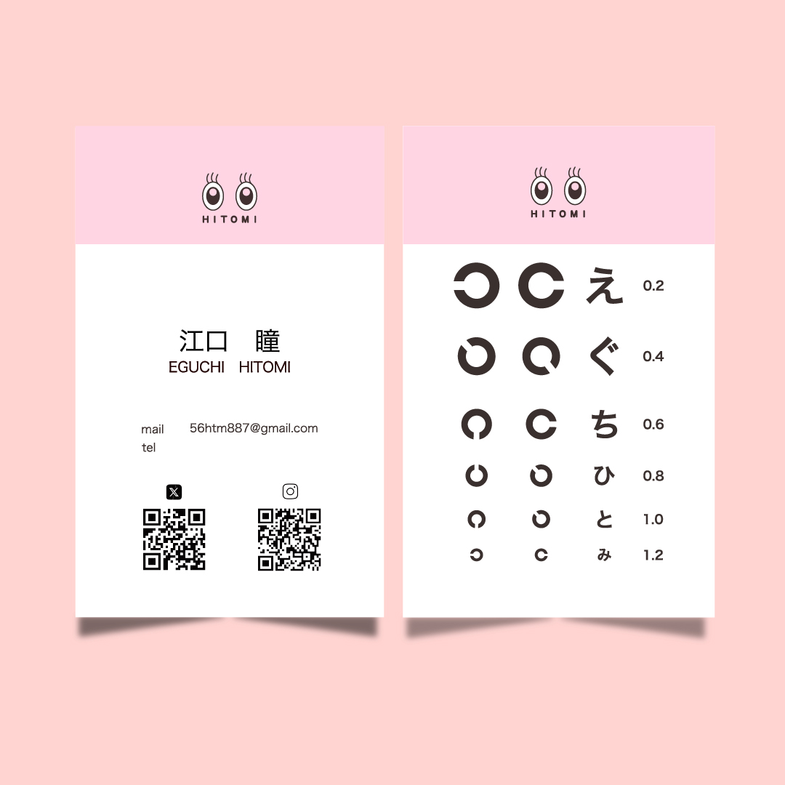
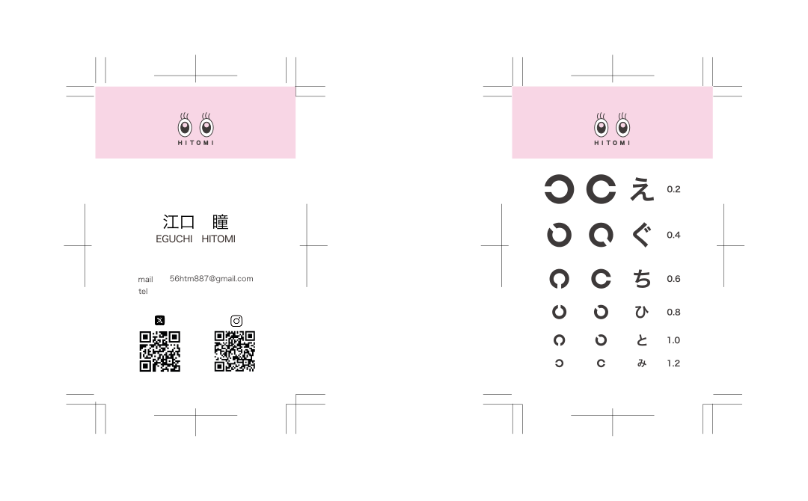

【コンセプト】
自身を表す「目のロゴ」から着想を得て、眼科の診察券を連想させるバイカラーを採用。
裏面には視力検査のモチーフを取り入れ、遊び心と個性を表現しました。
名刺を手渡した時に印象に残ること、会話の種になるようなデザインを意識し、コミュニケーションが図りやすくなるよう工夫しました。
【制作プロセス】
私自身を表すロゴの印象と名刺全体の雰囲気が一致するよう、色味や構成にも配慮しています。 実際に印刷会社へ入稿する際には、総インク量の確認や画像の埋め込みなど、印刷工程にも対応。 実用性とデザイン性の両立を意識しながら、細部まで丁寧に仕上げました。
【ターゲット】
今後、私と関わりを持つ可能性のある方
【制作目的】
連絡先などの情報を伝えるだけでなく、自分らしさを感じてもらえるツールとして名刺を制作。
初対面でも印象に残るよう、視覚的な個性と遊び心を意識しました。
【使用ツール】
Illustrator
【制作期間】
約4時間
【サイズ】
55×91mm